TRADITIONAL CLOTHING
Mokorotlo
.jpg)
A mokorotlo is a type of straw hat widely used for traditional Sotho clothing, and is the national symbol of Lesotho and the national symbol of the Basotho and Lesotho people. An image of the hat appears on the flag of Lesotho, and on Lesotho vehicle licence plates. The design is believed to have been inspired by the conical mountain Mount Qiloane. It is known as “molianyeoe”, which means "he who executes judgement in court" in Sesotho. It is manufactured from an indigenous grass known as “mosea” or “leholi”.Learn more
Thethana
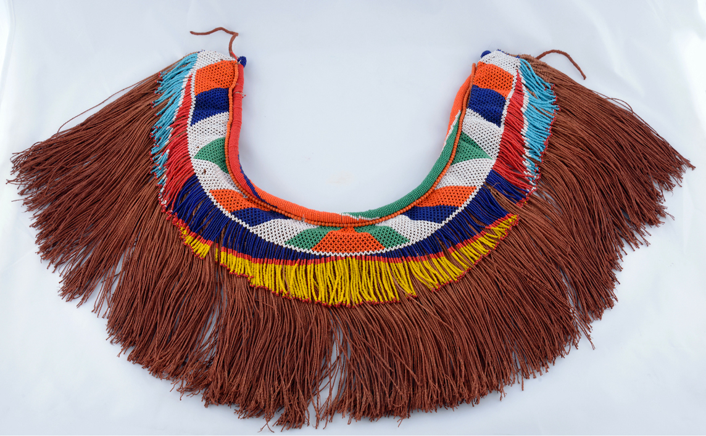Historically, as a South Sotho girl reached the age of four or five she was typically dressed in a thethana, as it was often the only garment worn by young girls throughout childhood until the onset of puberty up until the early 20th century.Learn more
Tsheha

In Basotho traditional attire, ts’eha refers to a short leather garment or apron, typically worn by young boys or initiates, especially during lebollo (male initiation rites). It is closely related to garments like morepo and sekola, and serves both symbolic and practical purposes. Learn more
kuoane
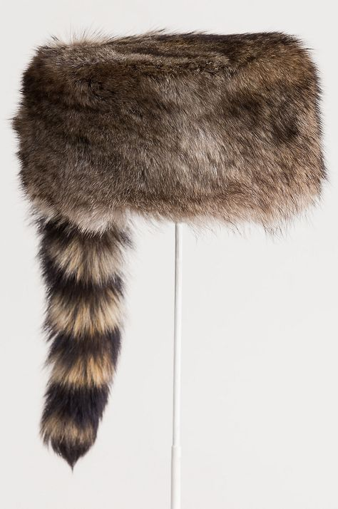Kuoane” refers to a traditional Basotho hat made from animal grass or reeds, historically worn by the Basotho people of Lesotho. It’s part of the broader category of meaparo ea Basotho ea khale—traditional Basotho attire—which includes garments and accessories that reflect cultural identity and heritage.Learn more
setsiba
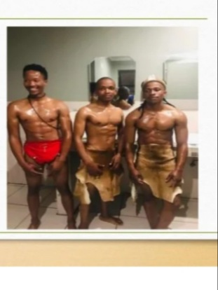In Basotho traditional attire, setsiba refers to a small animal skin or leather covering, typically worn by young boys or initiates, especially during lebollo (male initiation rites). It is a modest garment that carries deep cultural meaning tied to humility, transformation, and ancestral connection.Learn more
Tsoape
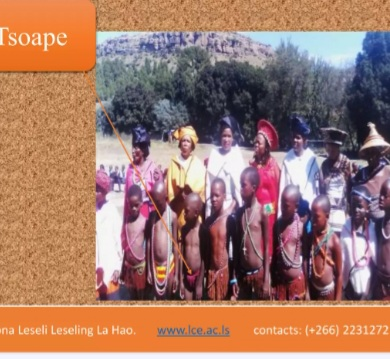In Basotho traditional attire, tsoape refers to a leather garment or covering, typically worn by initiates (bashemane ba lebollo) during male initiation rites. It is part of the sacred dress code that symbolizes humility, transformation, and cultural identity.Learn more
Lipetja
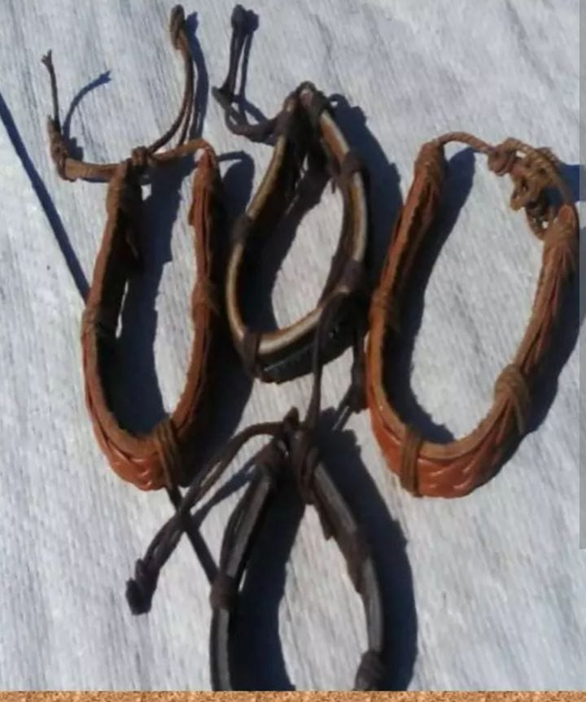In Basotho traditional attire, lipetja refers to strips of animal hide or leather thongs worn by initiates (bashemane ba lebollo) during male initiation ceremonies. These are part of the sacred dress code that emphasizes humility, discipline, and ancestral connection.Learn more
Molia-nyeoe
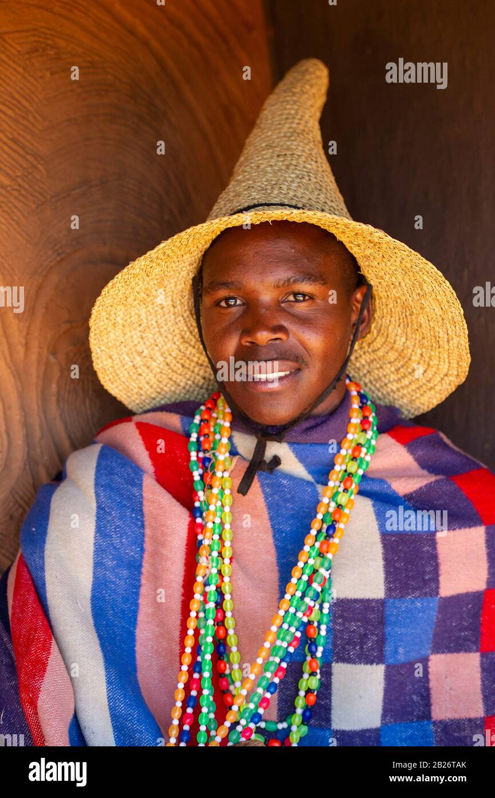In Basotho culture, Molianyeoe is not a piece of attire, but rather a title or role that carries deep social and ceremonial significance. The term molianyeoe refers to a spokesperson or negotiator, especially in the context of traditional marriage negotiations or family disputes.Learn more
setea
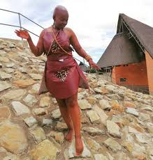Setea, when referred to in the context of Basotho attire, is often associated with the traditional and ceremonial clothing worn by the Basotho people of Lesotho. Here's a breakdown of what Basotho attire typically includes and how "setea" fits into this cultural expression:Learn more
kharetsana
In Basotho culture, Kharetsana refers to a traditional women's outfit made from Seshoeshoe fabric, which is a distinctive printed cotton material deeply rooted in Basotho heritage.Learn more
morepo

Morepo in Basotho attire refers to a traditional leather apron or skirt worn by men, especially during initiation ceremonies and other cultural rites. It is a deeply symbolic garment tied to manhood, heritage, and identity.Learn more
Ts'ets'e
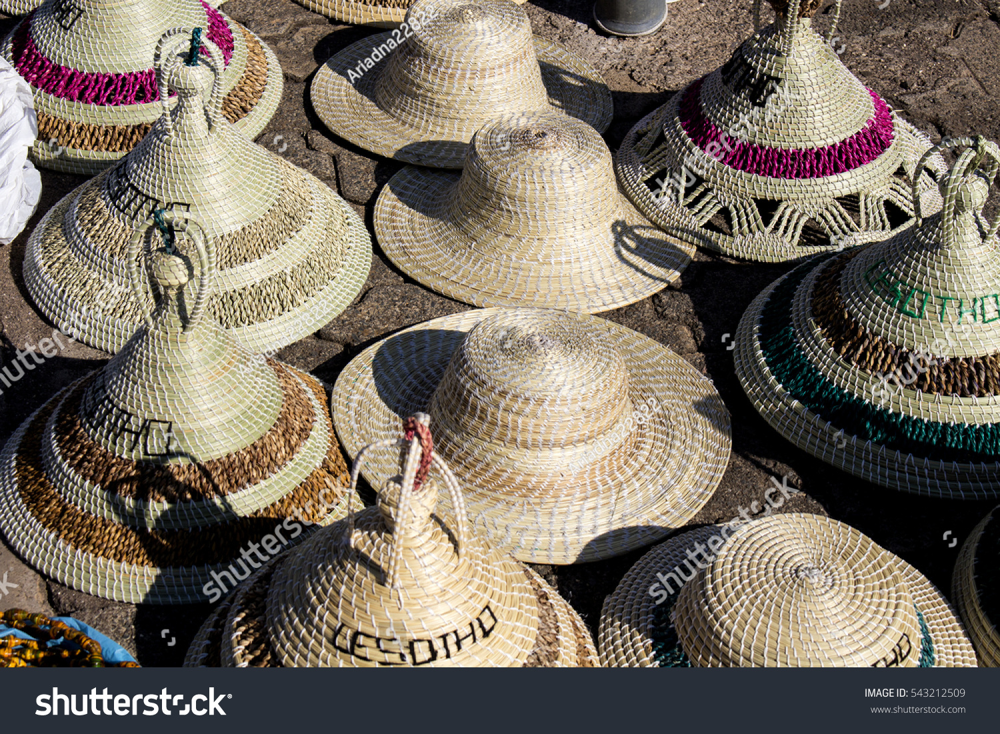ts'ets'e is a type of traditional headwear worn by Basotho people of Lesotho and South Africa, distinct from the conical mokorotlo hat,and often made from animal skims.Learn more
seshoeshoe
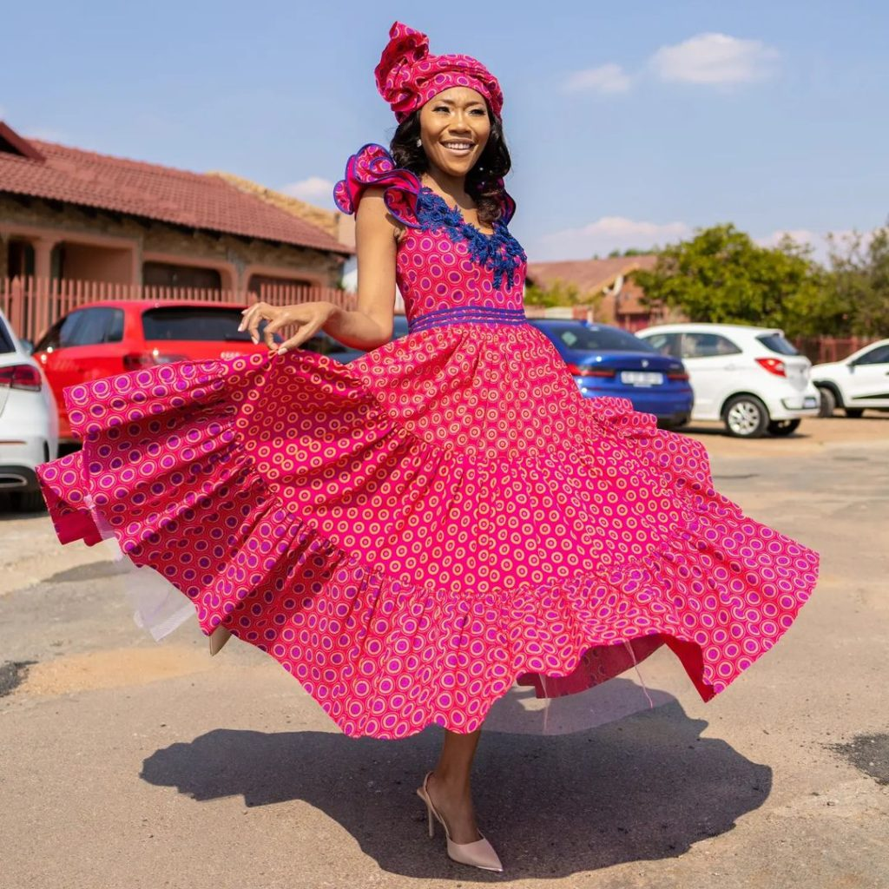seshoeshoe is Basotho traditional dresses and shirt worn by women,and designs. this can be worn various formal and informal events.Learn more
lehlosi
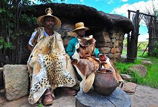lehlosi is a chiefly blanket made of patterns from the skin of wild cat or leopards. At present, one will often observe chiefs wearing commercially manufactured bearing the print of a leopard, rather than actual leopard skin.Learn more
seanamarena

Basotho Blanket (Seanamarena): A thick wool blanket, worn draped over the shoulders, symbolizing identity and heritage.Learn more
letata
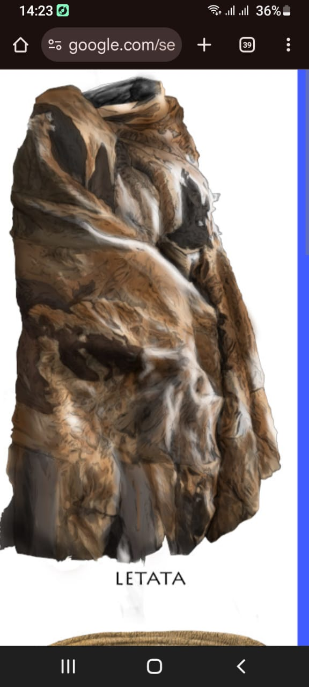Letata in Basotho attire refers to a traditional leather garment worn by Basotho men, particularly during initiation ceremonies and other cultural rites. It is closely related to morepo, but letata specifically denotes a leather loincloth or apron that covers the front part of the body.Learn more
kobo ea poone
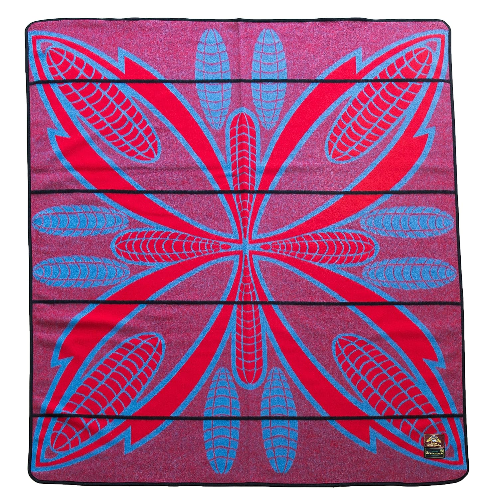Letata in Basotho attire refers to a traditional leather garment worn by Basotho men, particularly during initiation ceremonies and other cultural rites. It is closely related to morepo, but letata specifically denotes a leather loincloth or apron that covers the front part of the body.Learn more
sekola
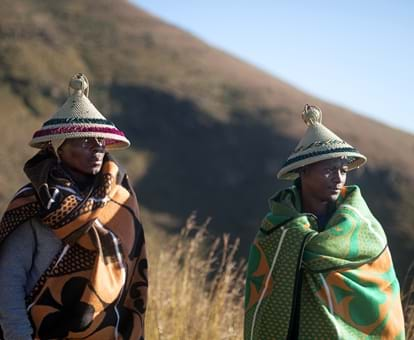In Basotho traditional attire, sekola refers to a short leather garment or loincloth, typically worn by young boys or initiates, especially during lebollo (male initiation rites). It is a modest and symbolic piece of clothing that reflects humility, discipline, and cultural identity.Learn more
mose oa lekoko
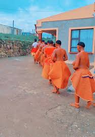In Basotho traditional attire, mose oa lekoko refers to a special ceremonial blanket or garment worn by initiates who have completed lebollo (the male initiation process). It is a powerful symbol of transition, maturity, and honor.Learn more
lingoetsi
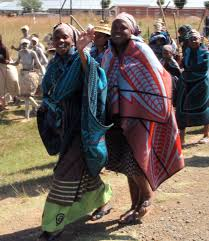In Basotho culture, lingoetsi refers to the traditional attire worn by a married woman, especially one who has recently joined her husband's family. The term lingoetsi itself means “daughter-in-law”, and the attire carries deep cultural meaning tied to respect, modesty, and identity.Learn more
tlhephe
In Basotho traditional attire, tlhephe refers to a leather neckband or strap, often worn by initiates (bashemane ba lebollo) or herders, and carries strong cultural and symbolic meaning.Learn more
morepo

In Basotho traditional attire, morepo refers to a leather loincloth or apron, typically worn by initiates or herders, and is deeply rooted in cultural symbolism and masculinity.Learn more
moholobela
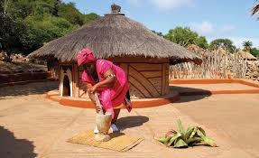Moholobela is a traditional Basotho fertility blanket worn by young men during initiation, symbolizing preparation for manhood and cultural transition in Lesotho.Learn more
setipana
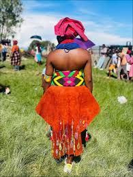Setipana is a stunning example of Basotho traditional attire, often worn during cultural ceremonies, weddings, and heritage celebrations. It typically features the iconic Basotho blanket, vibrant Seshoeshoe fabric, and accessories like the Mokorotlo hat. These elements reflect pride, identity, and the rich history of the Basotho people.Learn more
setipe
In Basotho traditional attire, Setipe refers to a decorative cloth or wrap, often worn by women as part of their ceremonial or everyday dress. It is a vibrant and expressive garment that adds color, elegance, and cultural identity to the Basotho outfit.Learn more
senyepa
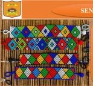In Basotho traditional attire, senyepa refers to a leather thong or strap, often worn around the waist or hips, particularly by initiates or herders. It’s a minimalist garment with deep cultural and symbolic meaning.Learn more
sefaha sa letsopa

In Basotho traditional attire, sefaha sa letsopa refers to a clay bead necklace that holds deep cultural and spiritual significance, especially in initiation ceremonies and rites of passage.Learn more
mokhahla
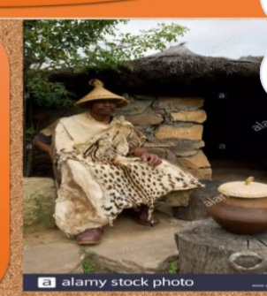In Basotho culture, the Mokhahla is a specific type of Basotho blanket that holds deep ceremonial and symbolic meaning.Learn more
moseha
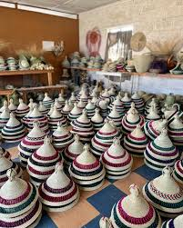In Basotho traditional attire, “moseha” refers to a leather belt or sash worn to secure the Basotho blanket (kobo) around the body, especially during formal or ceremonial occasions.Learn more
lifatla

In the context of Basotho traditional attire, “lifatla” shoes refer to rough, rugged, or informal footwear—often worn by herders, laborers, or people in rural settings. These shoes are typically not part of formal Basotho ceremonial dress, but they are deeply embedded in everyday life and cultural identity.Learn more
kobo ea lejoe

Lesitsi in Basotho attire refers to a traditional leather belt or sash worn by men, especially during initiation ceremonies and other cultural events. It plays both a functional and symbolic role in Basotho dress.Learn more
Lefitori
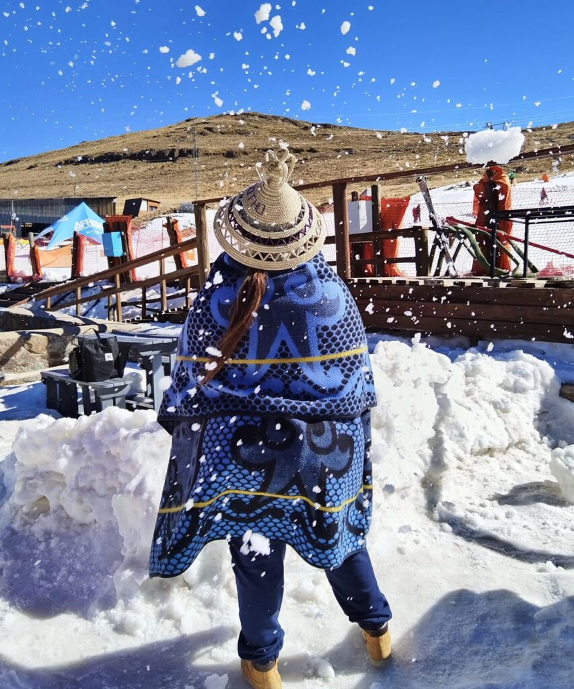The term "Lefitori" in the context of Basotho blankets refers to the "Victoria England" brand — one of the earliest and most iconic styles of Basotho blankets. The name "Lefitori" is a Sesotho adaptation of "Victoria," referencing Queen Victoria of England, whose name was associated with the brand when it was introduced in the late 19th century.Learn more
kharetsa
Kharetsana is a cherished form of Basotho women's traditional attire, celebrated for its elegance, cultural symbolism, and timeless beauty.Learn more
sebeto
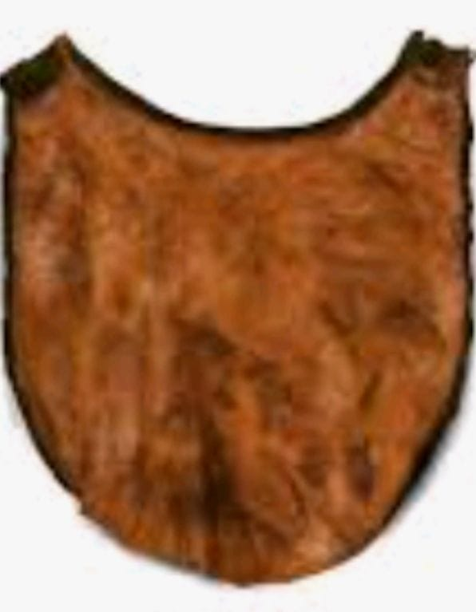sebeto is a cherished form of Basotho women's traditional attire, celebrated for its elegance, cultural symbolism, and timeless beauty.Learn more
lipholoana
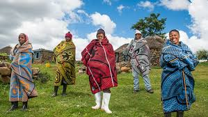Lipholoana in Basotho attire refers to small decorative tassels or woolen tufts traditionally attached to clothing, especially blankets or ceremonial garments. These adornments are more than just decorative—they carry cultural significance and are often used to express identity, status, or affiliation.Learn more